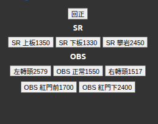
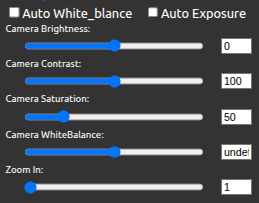
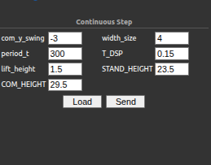

網頁操作介面教學
各節的 ▶ 開啟 DEMO 按鈕開啟模擬版，不需連接機器人即可互動試用。
點選圖片中虛線匡內可直接跳轉至該功能說明。
ImageProcessInterface
▶ 開啟 DEMO策略選擇
下拉選單，選擇目前要使用的策略模組。選定後點擊 location_load 按鈕，載入該策略所有參數。
us（足球）、ar（射箭）、bb（籃球）、sp（競走）、obs（避障）、sr（斯巴達）、wl（舉重）、mar（馬拉松）、bm（平衡木）、lc（上下板）
ar（射箭）、bb（籃球）、sp（競走）、obs（避障）、sr（斯巴達）、wl（舉重）、mar（馬拉松）、pk（罰踢）、rc（攀岩）
SaveAll
一鍵儲存所有設定的快捷按鈕，等同於同時執行 儲存相機參數 與 SaveHsv。 調整完相機參數與 HSV 色模後，按此確保所有變更都寫入檔案。
策略指撥開關
模擬實體 DIO 撥動開關，控制 API.py 內的 is_start 旗標。
開（Start）：發送
true關（Stop）：發送
false
原始影像
顯示相機的原始影像，畫面大小為320*240。
HSV 色模顯示
顯示經過 HSV 遮罩處理後的影像，畫面大小為320*240，顯示各顏色抓取HSV遮罩的結果。
各顏色在 HSV 色模顯示畫面中對應的標示顏色（OpenCV BGR 轉換）：
偵測目標 |
Label ID |
畫面標示顏色 |
BGR 值 |
|---|---|---|---|
Black |
1 |
洋紅（Magenta） |
|
Blue |
2 |
紫色（Purple） |
|
Green |
3 |
深紅（Dark Red） |
|
Orange |
4 |
深藍（Dark Blue） |
|
Red |
5 |
青色（Cyan） |
|
Yellow |
6 |
暗青（Dark Teal） |
|
White |
7 |
黃色（Yellow） |
|
Others |
8 |
粉紫（Violet） |
|
頭部馬達扭力
切換頭部馬達（水平/垂直軸）的扭力開關。
儲存相機參數
將目前 相機參數設定 的所有數值（亮度、對比、飽和度、白平衡、自動曝光、縮放），寫入設定檔(CameraSet.ini)以供下次啟動時自動載入。
頭部馬達控制
滑桿控制頭部相機的水平（Horizontal）與垂直（Vertical）方向。最小值與最大值為走線物理限制，非馬達刻度極限。
參數 |
說明 |
預設值 |
最小值 |
最大值 |
|---|---|---|---|---|
Horizontal Position |
水平刻度 |
2048（中心） |
1024 |
3096 |
Horizontal Speed |
水平轉速 |
1 |
1 |
200 |
Vertical Position |
垂直刻度 |
2048（中心） |
1023 |
2548 |
Vertical Speed |
垂直轉速 |
1 |
1 |
200 |
參數 |
說明 |
預設值 |
最小值 |
最大值 |
|---|---|---|---|---|
Horizontal Position |
水平刻度 |
2048（中心） |
1024 |
3096 |
Horizontal Speed |
水平轉速 |
1 |
1 |
200 |
Vertical Position |
垂直刻度 |
2048（中心） |
1023 |
2548 |
Vertical Speed |
垂直轉速 |
1 |
1 |
200 |
相機參數設定
即時調整相機的影像擷取參數，調整後畫面立即更新：
參數 |
說明 |
|---|---|
|
亮度 |
|
對比度 |
|
飽和度 |
|
色溫（手動白平衡值） |
|
自動白平衡開關 |
|
自動曝光開關 |
|
數位縮放倍率（預設 1.0） |
Build Table
選擇色模重建的範圍後觸發建表：
All_color_build：重建所有顏色的偵測模型，上方 HSV 色模顯示 所有顏色遮罩結果。Single_color_build：僅重建目前 Color Select 所選的顏色，上方 HSV 色模顯示 目前顏色遮罩與原始畫面疊加結果。
Color Select
下拉選單，選擇目前要編輯的顏色標籤（Orange、Yellow、Blue、Red、green、White、Other）。
Reset / Close
Reset：將 HSV 滑桿重設為全範圍（H: 0–180、S/V: 0–255），並即時發布至 HSV topic， 適合重新開始調色時使用。
Close：將所有 HSV 值設為 0，相當於關閉該顏色的偵測（偵測不到任何像素）。
色模參數設定（HSV）
六組滑桿定義顏色偵測的 HSV 範圍，調整後即時發布至 ROS topic 並更新 HSV 色模顯示 顯示：
參數 |
範圍 |
說明 |
|---|---|---|
|
0 – 180 |
色相下/上限 |
|
0 – 255 |
飽和度下/上限 |
|
0 – 255 |
明度下/上限 |
小訣竅
先調整 H 範圍鎖定目標顏色，再縮小 S/V 範圍排除背景雜訊。
SaveHsv
將目前 色模參數設定（HSV） 的參數寫入檔案(hsv.ini)。
若未執行 SaveHsv 而直接 BuildHsv，使用的仍是上次儲存的舊參數。
BuildHsv
讀出hsv.ini內的參數，並更新 HSV 色模顯示 與 色模參數設定（HSV）。
MotionControlInterface
▶ 開啟 DEMOHistory 面板與 Undo/Redo
左側 History 面板記錄所有對表格的操作，支援多步(20步)撤銷與重做：
↩ Undo：撤銷最後一次操作，恢復前一個狀態。↪ Redo：重新執行被撤銷的操作。Clear History：清除全部操作記錄，不影響目前表格內容。
備註
切換策略或存檔會清除所有紀錄
檔案操作（Save / Read）
在檔名輸入框填入名稱後操作：
Save：彈出確認對話框，確認後將以指定檔名儲存到目前策略Parameter資料夾內。
Read：讀取目前策略Parameter資料夾內指定檔名檔案。
備註
Save 前會清除 History 面板與 Undo/Redo 記錄。
Save Stand / Read Stand / Locked
危險
專題生請勿擅自使用此功能
站立姿勢（stand）的獨立儲存/讀取，檔名固定為 stand，不受檔名輸入框影響：
SaveStand：將29.ini內的資料複製至stand.ini請在使用前先send Sector 29。需先取消勾選
Locked Stand才能執行，避免誤覆蓋。ReadStand：載入 stand.ini 的姿勢資料。
Locked Stand勾選框：勾選時禁止 SaveStand/ReadStand，預設勾選作為保護。Locked 29勾選框：勾選時禁止 Send 使用 Sector 29，避免誤改站姿。
備註
ReadStand會清除目前網頁上所有資料並讀取Stand.ini使用前請確保已存檔或另開新頁。
操作順序：取消勾選
Locked Stand→ReadStand→調整Absolute ID29內的數值→取消勾選Locked 29→send Sector 29→execute確認調整結果→SaveStand→測試stand是否與Sector 29動作一致。
Reset
重新啟用所有操作按鈕。
執行任何動作卡住或無回應時可 Reset 恢復。
Send / Sector
指定 ID 與 Sector 後送出動作：
ID：要送出的動作序號（網頁中的號碼）。
Sector：動作 Sector 編號（程式/檔案中的號碼， Sector 29 預設被 Save Stand / Read Stand / Locked 的 Locked 29 保護）。
Send：將現在ID(網頁)的內容send到Sector(檔案)。
備註
需要釐清ID與Sector的差異，ID是網頁上的值，Sector是現在系統檔案內的值，兩者不一定相等。
execute / stand
execute：先驗證輸入的Sector號碼檔案是否存在後執行動作。
stand：執行stand.ini內的動作，是共同預設站姿。
備註
execute只會讀取現在Sector輸入的值，ID可不輸入
Multiple
將指定 ID 列的所有馬達數值乘以倍數：
ID：要縮放的動作 ID。
multipy × times：乘以幾倍（支援小數）。
警告
僅在 RelativePosition / RelativeSpeed 有效，MotionList 與 Absolute 不支援。
Merge
將 ID1 的馬達數值加到 ID2 上，並刪除 ID1 列：
ID1 merge to ID2：兩組相對位移合併為一個 ID2 動作。
RelativeSpeed 的對應列也會同步處理（非零值保留，零值覆蓋為 20）。
備註
執行後會只剩ID2，ID1會刪除並無法復原，請謹慎使用。
警告
僅在 RelativePosition / RelativeSpeed 檢視下有效，MotionList 與 Absolute 不支援。
表格列操作（Add / Delete / Reverse / Copy）
對目前表格檢視的列進行操作，所有操作都會被記錄到 History 面板與 Undo/Redo：
按鈕 |
說明 |
|---|---|
|
在目前表格新增一列空白/預設資料列。 |
|
刪除指定 ID 的列（Position/Speed 同步刪除）。 |
|
將指定 ID 列的所有馬達數值正負號反轉（僅限 RelativePosition）。 |
|
複製指定 ID 的列，新增一個內容相同的列。 |
CheckSum
輸入 ID 後顯示該列所有馬達各自的數值總和，主要用於檢查MotionList。 結果顯示在下方 CheckSum 欄位。
顯示範圍：M1–M21（21 顆馬達）
顯示範圍：M1–M27（27 顆馬達）
label / stand_label
介面頂部的狀態訊息列，顯示最近一次操作的結果：
label：一般操作回饋，如"Add is successful !!"、"Sector 29 is Locked"。stand_label：Stand 相關操作的訊息。
動作資料表格（分頁）
以 Radio button 切換五種資料檢視，各檢視共用同一組 ID：
分頁 |
說明 |
|---|---|
MotionList |
動作串（ID、Name、A1/D1 … A8/D8 動作/延遲參數） |
RelativePosition |
各馬達相對目前刻度的位移量（正/負刻度差） |
RelativeSpeed |
各馬達執行相對位移的速度 |
AbsolutePosition |
各馬達的絕對刻度 |
AbsoluteSpeed |
各馬達執行絕對位置的速度 |
備註
絕對刻度內輸入-1會跳過該馬達並維持當前刻度
ID 上下調整
Move Up / Move Down 搭配 ID 輸入框，將指定 ID 的列在目前表格中向上或向下移動一格，調整ID的顯示順序。
總扭力開關
扭力關閉 / 扭力已開啟 切換按鈕：
向所有馬達發送扭力開/關封包。
同步更新 馬達圖示控制 圖示的顏色狀態。
警告
關閉全體扭力後機器人身體會洩力，需有人在旁扶持。
馬達圖示控制
機器人正面圖示，各馬達編號按鈕疊加在對應關節位置，點擊可切換單顆馬達扭力。 按鈕綠色代表扭力 ON，紅色代表扭力 OFF。
備註
重開網頁時不會同步更新，請重新觸發總扭力開關來確保狀態正確
馬達配置（共 23 顆）：
部位 |
ID |
|---|---|
左手 |
1–4 |
右手 |
5–8 |
腰 |
9 |
左腿 |
10–15 |
右腿 |
16–21 |
頭部 |
22–23 |
馬達配置（共 29 顆）：
部位 |
ID |
|---|---|
左手 |
1–7 |
右手 |
8–14 |
腰 |
15 |
左腿 |
16–21 |
右腿 |
22–27 |
頭部 |
28–29 |
X_Series / Pro_Series 換算面板
備註
此功能僅大人型（ADULT）介面提供。
頭部馬達同時存在 X 系列與 Pro 系列，兩種系列刻度不相容。介面提供獨立的 Position 與 Speed 欄位，輸入後可分別送出換算指令，避免直接混用刻度導致問題。
各部位扭力開關
依部位批次切換扭力的群組按鈕：left_hand、right_hand、waist、left_leg、right_leg。
點擊 → 該部位所有馬達 洩力（OFF），方便手動調整關節角度。
再次點擊 → 恢復 鎖死（ON）。
同步更新 馬達圖示控制 圖示狀態。
單顆扭力控制
輸入馬達 ID，點擊 開啟 (ON) 或 關閉 (OFF) 控制單顆馬達扭力，
同步更新 馬達圖示控制 圖示狀態。
ID 範圍：1–23
ID 範圍：1–29
即時馬達刻度顯示
訂閱 /joint_states topic，即時顯示所有馬達目前的絕對刻度。
可用於確認機器人目前姿勢，配合 創建新 ID（複製全部馬達刻度） 擷取當前姿勢。
顯示 ID 1–21（21 顆馬達）
顯示 ID 1–27（27 顆馬達）
創建新 ID（複製全部馬達刻度）
Copy To Absolute 按鈕：
自動切換至 AbsolutePosition 檢視。
新增一列空白資料列。
將 即時馬達刻度顯示 的即時刻度值填入該列，速度預設 50。
用於快速將機器人目前姿勢記錄為一個 Absolute 動作。
複製指定馬達至指定 ID
Copy Selected → 按鈕展開選擇面板：
勾選要複製的馬達（可按部位群組全選/全不選）。
輸入目標 Row ID（AbsolutePosition 表格中已存在的 ID）。
點擊
Execute：將勾選馬達的即時刻度值覆寫到目標列。
備註
來源為 即時馬達刻度顯示 的即時數值；目標列必須已存在於 AbsolutePosition 表格中。
WalkingInterface
▶ 開啟 DEMOIMU 顯示
左側 Sensor_Value 區塊顯示即時 IMU 數值。
欄位 |
說明 |
|---|---|
Roll |
左右傾斜角（°） |
Pitch |
前後傾斜角（°） |
Yaw |
旋轉角（°） |
IMU Reset 按鈕：將 IMU 數值重置歸零。
Walking Mode 調整
選擇步態模式的單選按鈕。切換模式後會自動呼叫 Load 重新載入對應參數。
模式 |
statetype |
說明 |
|---|---|---|
Continuous |
0 |
平地連續行走（預設） |
LC_up |
1 |
上樓梯步態 |
LC_down |
2 |
下樓梯步態 |
備註
LC_up / LC_down 選項只有在目前策略為 lc 時才會顯示。
步長調整
輸入步態方向向量，數值單位為整數（內部以 1/100 cm 換算）。
欄位 |
說明 |
|---|---|
X |
前進（正）／後退（負） |
Y |
左移（正）／右移（負） |
Theta |
左轉（正）／右轉（負），單位：步 |
備註
可通過 方向控制 即時控制數值
Load
從機器人後端讀取目前存檔的步態參數，填回畫面上的參數欄位。
備註
在啟動步態前建議先按下 Load 來確保數值正確
Generate
啟動或切換步行狀態，並發布當前方向指令。
連續模式：作為開關，第一次點擊發送
1（開始），再次點擊發送0（停止）。單步模式（LC_up/LC_down）：每次點擊均發送
1，執行一次步行動作。
方向控制
六個方向按鈕，每次點擊使對應值增減一個步長，並於連續模式下即時更新。
按鈕 |
鍵盤捷徑 |
動作 |
|---|---|---|
Forward |
|
X += 100 |
Backward |
|
X -= 100 |
Left Move |
|
Y += 100 |
Right Move |
|
Y -= 100 |
Left Turn |
|
Theta += 1 |
Right Turn |
|
Theta -= 1 |
（Reset） |
|
X=Y=Theta=0 |
步態參數
參數面板依選取的 Walking Mode 顯示不同欄位組。
Continuous Step（平地連續步態）：
參數 |
說明 |
預設值 |
|---|---|---|
|
質心起步偏移（cm） |
0 |
|
腳寬（cm） |
4.5 |
|
週期(20一單位) |
360 |
|
雙支撐時間比例（0–1） |
0 |
|
抬腳高度（cm） |
2.5 |
|
站姿高度（cm） |
23.5 |
|
質心高度（cm） |
29.5 |
LCup / LCdown Step（樓梯步態）： 額外包含 Board_High （階梯高度）、Clearance （越障餘裕）參數。
預設值：com_height = 29.5 cm、stand_height = 23.5 cm、
period_t = 360 ms、lift_height = 2.5 cm。
預設值：com_height = 40 cm、stand_height = 50 cm、
period_t = 420 ms、lift_height = 5 cm。
Save
將畫面上的參數儲存至目前策略Parameter資料夾中的參數檔案。
平地模式：儲存至WalkingParameter.ini。
LC 模式：儲存至UpStair.ini/DownStair.ini。
Send
將畫面上的參數即時套用至行走節點（不寫入檔案），並執行腳寬更變。
備註
Send 僅更新執行中的節點，不寫入檔案。若要永久保存請改用 Save。
miniDRC
▶ 開啟 DEMO將 WalkingInterface、ImageProcessInterface 與MotionControlInterface整合成單一精簡頁面。
步態調整面板按鈕（Walking Setup）
點擊後切換右側面板至步態參數調整畫面，功能與 WalkingInterface 的步態參數區塊相同。
相機調整面板按鈕（Camera Setup）
點擊後切換右側面板至相機設定畫面，功能與 ImageProcessInterface 的相機設定區塊相同。
也參考
切換面板（三種狀態）
右側面板依點擊按鈕切換三種顯示模式：
點擊按鈕將兩顆頭部馬達轉至指定預設刻度
{kind=link}

相機參數調整，功能與 相機參數設定 相同
{kind=link}

步態參數調整，功能與 WalkingInterface 的步態參數區塊相同。 步態參數、Load、Send 。
{kind=link}

執行指定 Motion
頁面底部提供 11 個快捷動作按鈕（motion1–motion11），各自對應一個可編輯的 Sector 編號欄位。
點擊按鈕後，讀取對應輸入欄的 Sector 編號，呼叫 CheckSectorDRC(sector) 向機器人下達執行指令。
預設 Sector 對應表：
按鈕 |
預設 Sector |
|---|---|
motion1 |
209 |
motion2 |
208 |
motion3 |
111 |
motion4 |
333 |
motion5 |
1111 |
motion6 |
2222 |
motion7 |
3333 |
motion8 |
103 |
motion9 |
871 |
motion10 |
102 |
motion11 |
872 |
另有 stand 與 notice 按鈕。
備註
Sector 編號可直接在欄位中修改，無需重新整理頁面，方便比賽現場臨時調整動作。
預設編號可根據當年度負責人更改。
其他界面
頁面 |
說明 |
|---|---|
|
節點狀態監控：即時顯示所有 ROS2 節點的 |